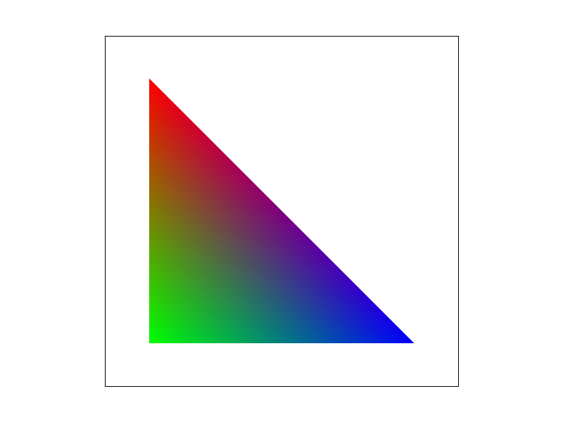

CS 184 Spring 2022
Project 1: Rasterizer
Atte Ahmavaara
Overview
In this project I implemented a rasterization engine that enables drawing of arbitrary svg images, color gradients, and shape transforms. I expanded the engine to support basic supersampling and basic texture filtering. Finally, I optimized the critical paths (per pixel/per sample operations) in the pipeline so that the frame times remain low and the engine would not hang.
My number one takeaway from this project is described perfectly by Donald Knuth: "Premature optimization is the root of all evil". In the next project I will first focus on extremely readable, understandable, and intuitive code. Then at the end, after all parts are completed, I can optimize.
Task 1: Drawing Single-Color Triangles
Walk through how you rasterize triangles in your own words.
I begin rasterizing by converting the points to Vector2D. Then I initialize and save all possible pre-computable values for computing barycentric coordinates into a BarycentricCache struct. Next, I compute the exterior bounding box of the triangle and save this into a PixelBoundingBox struct. Now I loop over the pixels in this bounding box. For each pixel, I compute the screen space sample point and then loop over each supersample index, computing the actual sample point relative to the initial screen space sample point. Finally, for each supersample point I compute the barycentric coordinates using the cached values from the initialization phase, check if all of the points are in the range [0,1], and if so, I fill the corresponding pixel in the sample buffer with the color.
Explain how your algorithm is no worse than one that checks each sample within the bounding box of the
triangle.
My algorithm, not including additional optimizations, loops only over the bounding box of the triangle at the top (double loop) and in each iteration. Thus my algorithm cannot be worse than looping over the bounding box. I further optimized this by breaking the for loop which loops over pixels in a row when we have once been inside the triangle, and now are not anymore.
Show a png screenshot of basic/test4.svg with the default viewing parameters and with the pixel inspector centered
on an interesting part of the scene.
EXTRA CREDIT: Explain any special optimizations you did beyond simple bounding box triangle rasterization, with a timing
comparison table.
As previously mentioned, I optimized this by breaking the for loop which loops over pixels in a row when we have once been inside the triangle, and now are not anymore. Further, I I made sure to only use pointers, rather than copying data (pointers were already used for the raw implementation). Finally, I precompute and cache as many variables for computing barycentric coordinates as possible. Tested on /basic/test6.svg 5 times each, the runtime of svg.draw() using clock() came out to:
| | raw | barycentric caching | barycentric caching + row breaking |
|-------------|-----------|-----------------------|--------------------------------------|
| run 1 | 0.00201 | 0.001532 | 0.001234 |
| run 2 | 0.001953 | 0.00147 | 0.001387 |
| run 3 | 0.002332 | 0.0015 | 0.001237 |
| run 4 | 0.001983 | 0.001472 | 0.001669 |
| run 5 | 0.002065 | 0.001557 | 0.001258 |
| average | 0.0020686 | 0.0015062 | 0.001357 |
| min | 0.001953 | 0.00147 | 0.001234 |
| raw_ave/ave | 1 | 1.37339 | 1.52439 |
| raw_min/min | 1 | 1.32857 | 1.58266 |
Task 2: Antialiasing by Supersampling
Walk through your supersampling algorithm and data structures. Why is supersampling useful? What modifications did
you make to the rasterization pipeline in the process? Explain how you used supersampling to antialias your
triangles.
My supersampling algorithm has a double for-loop for each pixel, which samples at uniform points distributed inside the pixel. Each sample has a unique 4-tuple: (x_pixel, y_pixel, x_sample, y_sample). (x_pixel, y_pixel) represents the pixel coordinate in the final frame buffer, and (x_sample, y_sample) represents the sample coordinate inside of the corresponding pixel. Note that I refer to sampling rate as the one dimensional sampling rate--the square root of the default implementation sampling rate. The sample buffer is organized exactly as the default implementation given in the project (1 dimensional buffer of colors), but this time with width X times the sampling rate and height Y times the sampling rate, but still one-dimensional. Finally, after all sub-pixels are rasterized, this gets written to the original size frame buffer by averaging the colors of the sampling rate by sampling rate square contained inside of the pixel.
Supersampling is useful because it allows our rasterizer to take into account more fine edge details. The staircase pattern observed on diagonal edges is more gradual, and then in the final pass it averages to something that looks similar to the finer pattern from a far distance.
This was covered in the first paragraph, but to reiterate more explicitly: I moved the per-pixel operations deeper by two additional nested for loops, and made the sampling interval smaller by the sampling rate.
Covered above.
Show png screenshots of basic/test4.svg with the default viewing parameters and sample rates 1, 4, and 16 to
compare them side-by-side. Position the pixel inspector over an area that showcases the effect dramatically; for
example, a very skinny triangle corner. Explain why these results are observed.
With sampling rate 1, 4, 16 respectively. You can see in the first image the staircasing pattern is very jagged, since there is no sub-sampling being done--all pixels are white or red. In the sampling rate 4 case, some jaggies are still percievable, but the edge between red and white is much more blurred. In the sampling rate 16 case, the red white edges are almost entirely blurred out, and they look nearly perfectly straight, since in reality the supersampling is taking into account 4x more detailed edges (since an edge only lies along one line across one axis of the 4x4).
Task 3: Transforms
Create an updated version of svg/transforms/robot.svg with cubeman doing something more interesting, like waving or
running. Explain what you were trying to do with cubeman in words.
I was trying to make the robot wave with its right hand, and rotate its left hand down by its side. I could not figure out how to properly get its arm all the way down, since the rotations seem to have an unknown origin/axis of rotation.
Task 4: Barycentric Coordinates
Explain barycentric coordinates in your own words and use an image to aid you in your explanation.
Barycentric coordinates are a coordinate system that is entire based on the relative locations inside the triangle. In the picture above, each vertex is a different pure color, and for any point inside of the triangle, the barycentric coordinates correspond to the proportion of each color that is used in the final color for that point.

Show a png screenshot of svg/basic/test7.svg with default viewing parameters and sample rate 1. If you make any
additional images with color gradients, include them.

Task 5: "Pixel sampling" for Texture Mapping
Explain pixel sampling in your own words and describe how you implemented it to perform texture mapping. Briefly
discuss the two different pixel sampling methods, nearest and bilinear.
Pixel sampling is the method which chooses the color from a texture for a specific point in world space. Its goal is to reduce aliasing since textures and world coordinates rarely are in 1:1 correspondence. I implemented two different methods, nearest and bilinear. Nearest is implemented by simply rounding the non-integral barycentric coordinates inside the triangle (mapped to the texture space) to integral values, and selecting that pixel from the texture. Bilinear is more involved, namely in that we sample all 4 pixels surrounding the same non-integral coordinates as in nearest, and then take a linearly weighted average of these four pixels, based on the relative position of the point to each of the 4 pixels.
Check out the svg files in the svg/texmap/ directory. Use the pixel inspector to find a good example of where
bilinear sampling clearly defeats nearest sampling. Show and compare four png screenshots using nearest sampling at
1 sample per pixel, nearest sampling at 16 samples per pixel, bilinear sampling at 1 sample per pixel, and bilinear
sampling at 16 samples per pixel.
nearest, 1x bilinear, 1x
nearest, 16x bilinear, 16x
Comment on the relative differences. Discuss when there will be a large difference between the two methods and
why.
Looking at the 4 images, we can see clearly that the nearest, 1x case has by far the most aliasing. The grid lines are very discontinuous and jaggy. Switching to bilinear pixel interpolation, but still at 1x sampling rate improves the image by starting to bridge the gaps between lines. The lines look smoother, especially from further away. Switching to 16x sampling rate, we see that even the image with nearest pixel sampling looks significantly better than any of the 1x images. The grid lines lines are all connected and much smoother. Supersampling reduces the need for pixel sampling methods, since the true sampling rate of the texture is so high already. What I mean by this is all of the sub-pixels that make up a single pixel in supersampling will have very similar bilinear colors, so taking the nearest texel for 16 points and averaging the result is nearly identical to bilinearly interpolating all 16 points with, likely/largely the same 4 pixels. Unsurprisingly, we see that the effect of bilinear interpolation with 16x supersampling is extremely minimal, especially when compared relative to the effect on 1x supersampling / no supersampling.
The differences between the two methods will be the greatest when dealing with a high relative sampling rate compared to the texture's sample rate--aka magnification.
Task 6: "Level Sampling" with Mipmaps for Texture Mapping
Explain level sampling in your own words and describe how you implemented it for texture mapping.
Level sampling is the method of choosing which mipmap(s) to use when doing pixel sampling. The first step is to calculate the 'desired' mipmap level. This is universal for all 3 level sampling methods, and uses the aproximate area of the texture to compute how much detail is needed, before clamping this value to valid levels. Of course in the L_ZERO case, 0 is always the appropriate level. Continuing, I implemented level sampling by considering two cases: bilinear level sampling and all other level sampling. In the 'else' case, we simply call the appropriate pixel sampling method with the rounded level and return the result. In the bilinear case, we find the integral levels above and below our non-integral level, all 3 of which are clamped to the range of valid levels. This way all edge cases around levels are automatically handled by the linear interpolation. We use the desired pixel sampling method on the mipmap above and below, and then interpolate between these two colors by the decimal part of the non-integral level.
You can now adjust your sampling technique by selecting pixel sampling, level sampling, or the number of
samples per pixel. Describe the tradeoffs between speed, memory usage, and antialiasing power between the
three various techniques.
Pixel sampling is the cheapest in terms of memory usage, but also one of the weaker methods of antialiasing. This is since no extra textures have to be stored, but only considering the four nearest pixels in the texture, by itself, is not enough to provide powerful smoothing/antialiasing. In terms of speed, pixel sampling is very fast, since probing a texture for its pixels is a relatively fast lookup.
Level sampling is the fastest method, and a surprisingly powerful method of antialiasing. This is since there are at most two lookups (bilinear), and often only one lookup, from the correct texture file, and the only extra work to be done is switching between the texture you wish to use. It's quite powerful, since we are able to select the texture with a sample rate that corresponds best to the actual sampling rate in screen space. In terms of memory, level sampling is not very intensive since storing the additional mipmaps can be done within 33.3% of the currently used memory. This is certainly more than pixel sampling, but not to the level of supersampling.
Supersampling is by far the most powerful form of antialiasing, but also the most expensive in terms of memory and speed. Supersampling is directly increasing the resolution at which we compute pixel values by a significant amount. Even supersampling at a 2x sampling rate (along one dimension) results in a 4x slower frame time. Where bilinear pixel sampling may also increase 'operations' by 4x, it is only 4x in terms of probing the texture, not in calculating whether it is inside a triangle, sample buffer filling, etc--all of which supersampling does do 4x (in only the 2x sampling rate case!). Further, we must keep a significantly larger sample buffer in memory at all times, in addition to the frame buffer, leading to high memory usage. But, since supersampling is directly doing the extra work to sample at a very fine detail and then average in the very end, its antialiasing power is immense.
Using a png file you find yourself, show us four versions of the image, using the combinations of L_ZERO and
P_NEAREST, L_ZERO and P_LINEAR, L_NEAREST and P_NEAREST, as well as L_NEAREST and P_LINEAR.
The circular aliasing found in the L_ZERO, P_NEAR (most naive) image is clear. Changing to bilinear pixel sampling removes some of the very fine aliasing, but the major aliasing is still entirely there. If we instead change to nearest level sampling, almost entirely all of the aliasing noise is gone. Adding bilinear pixel sampling to this further removes some of the finer aliasing, resulting in an image with significantly reduced aliasing.
L_ZERO, P_NEAR L_ZERO, P_LINEAR
L_NEAR, P_NEAR L_NEAR, P_LINEAR